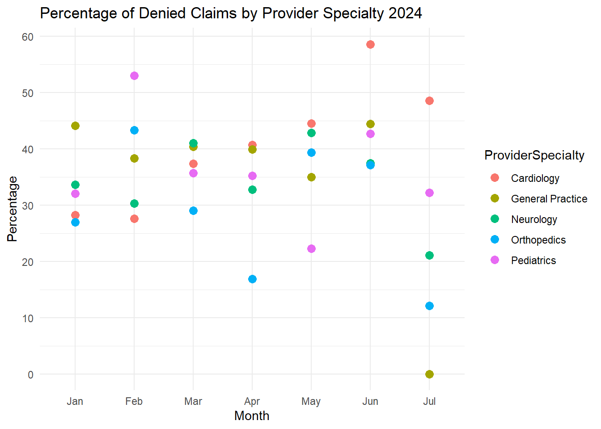

## Load the dataset into Rstudio environment
library(readr)
## load data visualization and data manipulation packages
library(ggplot2)
library(dplyr)
claimsdata <- read_csv("C:/R/RProjects/guilzee.github.io/posts/ClaimsData/Input/enhanced_health_insurance_claims.csv")
head(claimsdata)
## Load tidyverse library
library(tidyverse)Healthcare organizations are typically interested in gaining insights about optimizing patient care, reducing unnecessary expenses, provider performance and improving overall health outcomes.
Step 1 Identify the Goal(s) and Metrics
üîç Identify cost inefficiencies and specialty-specific trends that impact financial performance.
- Metric: Trends in claim amount by provider specialty. Is there a consistent rise or dip, or any unusual trends?
üîç Identify patterns in claim denials by specialty, which could highlight issues in billing practices, claims processing, or insurance policies.
- Metric: Financial impact of denied claims by Specialty (total $ amount of denied claims/ total $ of claims for each specialty)
üîç Identify which claim submission methods are most effective and which ones are associated with higher denial rates
- Metric: Trends in claims submissions to see which are more successful. Cost per claim submission method (paper, online [electronic] or phone) and claim status (approved, denied and pending).
Step 2 Collect & Prepare the Data
We’ll be using Le’Andre Nash’s incredible “Enhanced Health Insurance Claims Dataset” from Kaggle.
Important
Note from the Creator: The data is entirely synthetic and generated using the Faker library.
üìÇ Other data sources to consider adding:
Electronic Health Records EHRs to look at clinic visits
Variables like patient comorbidities and geographic location (e.g., urban vs. rural)
Patient socioeconomic status
Common issues in this step are missing data points or incomplete claims. Date formatting issues or duplicate records, and unusually high or low values (outliers). Let’s also check the range for the ClaimDate column.
Let’s perform some checkpoints on the dataset.
Are there missing datapoints in the dataset?
## count of total missing values for the entire dataset
sum(is.na(claimsdata))[1] 0## no missing data points## use the glimpse function to see the number of rows, columns and types of variables.
glimpse(claimsdata)Rows: 4,500
Columns: 17
$ ClaimID <chr> "10944daf-f7d5-4e1d-8216-72ffa609fe41", "fcbeb…
$ PatientID <chr> "8552381d-7960-4f64-b190-b20b8ada00a1", "327f4…
$ ProviderID <chr> "4a4cb19c-4863-41cf-84b0-c2b21aace988", "422e0…
$ ClaimAmount <dbl> 3807.95, 9512.07, 7346.74, 6026.72, 1644.58, 1…
$ ClaimDate <date> 2024-06-07, 2023-05-30, 2022-09-27, 2023-06-2…
$ DiagnosisCode <chr> "yy006", "tD052", "zx832", "kr421", "LZ261", "…
$ ProcedureCode <chr> "hd662", "mH831", "dg637", "kG326", "cx805", "…
$ PatientAge <dbl> 16, 27, 40, 65, 24, 57, 40, 5, 74, 37, 5, 44, …
$ PatientGender <chr> "M", "M", "F", "M", "M", "M", "M", "M", "F", "…
$ ProviderSpecialty <chr> "Cardiology", "Pediatrics", "Cardiology", "Neu…
$ ClaimStatus <chr> "Pending", "Approved", "Pending", "Pending", "…
$ PatientIncome <dbl> 90279.43, 130448.02, 82417.54, 68516.96, 84122…
$ PatientMaritalStatus <chr> "Married", "Single", "Divorced", "Widowed", "M…
$ PatientEmploymentStatus <chr> "Retired", "Student", "Employed", "Student", "…
$ ProviderLocation <chr> "Jameshaven", "Beltrantown", "West Charlesport…
$ ClaimType <chr> "Routine", "Routine", "Emergency", "Routine", …
$ ClaimSubmissionMethod <chr> "Paper", "Online", "Online", "Phone", "Phone",…## to get a list of data types (I prefer this method)
map(claimsdata, class)$ClaimID
[1] "character"
$PatientID
[1] "character"
$ProviderID
[1] "character"
$ClaimAmount
[1] "numeric"
$ClaimDate
[1] "Date"
$DiagnosisCode
[1] "character"
$ProcedureCode
[1] "character"
$PatientAge
[1] "numeric"
$PatientGender
[1] "character"
$ProviderSpecialty
[1] "character"
$ClaimStatus
[1] "character"
$PatientIncome
[1] "numeric"
$PatientMaritalStatus
[1] "character"
$PatientEmploymentStatus
[1] "character"
$ProviderLocation
[1] "character"
$ClaimType
[1] "character"
$ClaimSubmissionMethod
[1] "character"Are there any duplicated ClaimIDs?
group_by(claimsdata, ClaimID) %>%
filter(n() >1)# A tibble: 0 × 17
# Groups: ClaimID [0]
# ℹ 17 variables: ClaimID <chr>, PatientID <chr>, ProviderID <chr>,
# ClaimAmount <dbl>, ClaimDate <date>, DiagnosisCode <chr>,
# ProcedureCode <chr>, PatientAge <dbl>, PatientGender <chr>,
# ProviderSpecialty <chr>, ClaimStatus <chr>, PatientIncome <dbl>,
# PatientMaritalStatus <chr>, PatientEmploymentStatus <chr>,
# ProviderLocation <chr>, ClaimType <chr>, ClaimSubmissionMethod <chr>## no, there are no duplicated claimsSince we are not going to be using the patient age or patient income columns, lets analyze the claim amount field for outliers using boxplots.
ggplot(claimsdata, aes(ProviderSpecialty, ClaimAmount, fill = ProviderSpecialty)) +
ggtitle("Boxplots") +
xlab("Provider Specialty") + ylab("Claim Amount in USD") +
geom_boxplot() +
theme(axis.text.x = element_text(angle = 45, hjust = 1)) ## Rotate x-axis labels for readabilityprint(IQR(claimsdata$ClaimAmount)) ## measures the spread of the middle 50% of values[1] 4953.38print(range(claimsdata$ClaimAmount)) ## min value and the max value[1] 100.12 9997.20print(mean(claimsdata$ClaimAmount)) ## the average claim amount[1] 5014.204Since 50% of the data is ~$4953.38, let’s calculate the lower and upper bounds using the IQR. Then flag values that fall outside these bounds as potential outliers.
iqr <- IQR(claimsdata$ClaimAmount)
## Calculate Q1 and Q3
q1 <- quantile(claimsdata$ClaimAmount, 0.25)
q3 <- quantile(claimsdata$ClaimAmount, 0.75)
## Calculate the lower and upper bounds
lower_bound <- q1 - 1.5 * iqr ## 25% of the data
upper_bound <- q3 + 1.5 * iqr ## 75% of the data
print(lower_bound) 25%
-4920.997 print(upper_bound) 75%
14892.52 Let’s see if there are any outliers for the claims amount column
## Identify the outliers
outliers <- claimsdata %>%
filter(ClaimAmount < lower_bound | ClaimAmount > upper_bound)
print(outliers)# A tibble: 0 × 17
# ℹ 17 variables: ClaimID <chr>, PatientID <chr>, ProviderID <chr>,
# ClaimAmount <dbl>, ClaimDate <date>, DiagnosisCode <chr>,
# ProcedureCode <chr>, PatientAge <dbl>, PatientGender <chr>,
# ProviderSpecialty <chr>, ClaimStatus <chr>, PatientIncome <dbl>,
# PatientMaritalStatus <chr>, PatientEmploymentStatus <chr>,
# ProviderLocation <chr>, ClaimType <chr>, ClaimSubmissionMethod <chr>There are no outliers. Let’s also check the range for the ClaimDate column.
print(range(claimsdata$ClaimDate)) ## the dates cover 2 years[1] "2022-07-09" "2024-07-08"Step 3 Analyze the Data
Let’s analyze the data and look at each key metric.
Trends in claim amount by provider specialty. Is there a consistent rise or dip, or any unusual trends?
Healthcare organizations can determine where costs are increasing unnecessarily or where cost-effective care is being provided by examining the average claim amounts over time for various provider specialties.
## Aggregate the claimamount column to calculate the average claim amount per provider specialty
## use the pipe operator to take the output and pass it on as the first argument into the function on the right.
library(lubridate)
trend <- claimsdata %>%
mutate(Year= year(ClaimDate)) %>% ## create the year column
group_by(ProviderSpecialty, Year) %>% ## group by specialty and year
summarize(AvgClaim = mean(ClaimAmount, na.rm = TRUE)) ## average claim amount by specialty and year, remove nulls
head(trend)# A tibble: 6 × 3
# Groups: ProviderSpecialty [2]
ProviderSpecialty Year AvgClaim
<chr> <dbl> <dbl>
1 Cardiology 2022 4914.
2 Cardiology 2023 5107.
3 Cardiology 2024 4929.
4 General Practice 2022 5028.
5 General Practice 2023 4980.
6 General Practice 2024 4941.## Create the line graph with all specialties
ggplot(trend, aes(x = Year, y = AvgClaim, color = ProviderSpecialty)) +
geom_line(linewidth = 1) +
labs(title = "Trend of Average Claim Amount by Specialty",
x = "Year",
y = "Average Claim Amount in USD") +
theme_minimal() +
theme(axis.text.x = element_text(angle = 45, hjust = 1)) ## Rotate x-axis labels for readabilityAll specialties have a downward trend except Pediatrics. The average claim amount for providers specializing in Pediatrics seems to be increasing from 2022 to 2024. I wonder if these results are expected?
A consistent rise in claim amounts for Pediatrics could be due to factors like changes in the cost of pediatric procedures, new medical treatments, or increased demand for pediatric services. However, it could also raise concerns about potential issues like over-billing or unnecessary procedures, which would need further investigation.
Let’s keep going onto our second metric.
Financial impact of denied claims by Specialty (total $ amount of denied claims/ total $ of claims for each specialty)
While less than 5% is ideal, the industry average denial rate ranges from 5% to 10%. The goal for providers should be to settle 85% of denials in 30 days or less. (source: hfma.com)
DenialRates <- claimsdata %>%
mutate(Year= year(ClaimDate), Month= month(ClaimDate)) %>%
filter(Year == 2024) %>%
group_by(ProviderSpecialty, Month) %>%
summarize(
Total_ClaimAmount = sum(ClaimAmount, na.rm = TRUE), ## Sum of all claims for each specialty
Denied_ClaimAmount = sum(ClaimAmount[ClaimStatus == "Denied"], na.rm = TRUE),
Percentage = round(Denied_ClaimAmount/ Total_ClaimAmount * 100,2)
) ## Sum of denied claims for each specialty
view(DenialRates)Let’s visualize the DenialRates with a scatterplot for the most current year, 2024.
ggplot(DenialRates, aes(x= as.factor(Month), y= Percentage, color = ProviderSpecialty)) +
ggtitle("Percentage of Denied Claims by Provider Specialty 2024") +
xlab("Month") + ylab("Percentage") +
geom_point(size = 3) +
scale_y_continuous(breaks = seq(0, 100, by = 10)) + ## Y-axis increments by 1
scale_x_discrete(labels = c("1" = "Jan", "2" = "Feb", "3" = "Mar", "4" = "Apr", "5" = "May", "6" = "Jun", "7" = "Jul", "8" = "Aug", "9" = "Sep", "10" = "Oct", "11" = "Nov", "12" = "Dec")) +
theme_minimal()
Wow! For the entire year of 2024, the General Practice specialty was the only specialty to meet the industry standard in July. Cardiology was consistently higher compared to the other specialties from April through July of 2024.
I wonder what practices General practice was implementing for July of 2024, and how to implement them into the other specialties?
Let’s keep going onto our third and final metric.
Trends in claims submissions to see which are more successful. Cost per claim submission method (paper, online [electronic] or phone) and claim status (approved, denied and pending)
95% is the industry standard benchmark- this implies that at least 95% of claims should be submitted electronically by healthcare providers. Because electronic claim filing is quicker, more accurate, and less expensive than paper-based submissions. (source: MD Clarity)
## group data by provider specialty and claim submission methods
claims_status_by_method <- claimsdata %>%
filter(ClaimStatus== "Approved" | ClaimStatus== "Denied") %>%
group_by(ClaimSubmissionMethod, ClaimStatus) %>%
summarize(ClaimCount = n()) %>% ## counts for each group.
ungroup() %>%
group_by(ClaimSubmissionMethod) %>%
mutate(Percentage = round(ClaimCount / sum(ClaimCount) * 100, 2)) %>%
arrange(ClaimSubmissionMethod, -Percentage) ## see which status is more prevalent for each submission method
# View the calculated table
print(claims_status_by_method)# A tibble: 6 × 4
# Groups: ClaimSubmissionMethod [3]
ClaimSubmissionMethod ClaimStatus ClaimCount Percentage
<chr> <chr> <int> <dbl>
1 Online Denied 525 52.2
2 Online Approved 480 47.8
3 Paper Approved 524 50.6
4 Paper Denied 511 49.4
5 Phone Approved 518 52.1
6 Phone Denied 476 47.9The percentages are calculated within each submission method (so for “Online”, the total is 525 + 480 = 1005 claims, and the percentages are based on that total).
The analysis shows that even while online submissions are faster and less expensive, they still have a high rejection rate (52.2%).
The Paper method of submitting a claim has the highest chance of being approved.I wonder if there is a possibility that online submissions have stricter review processes, leading to more denials?
In Summary
Organizations can modify care models, promote evidence-based practices, and enhance patient outcomes by identifying inefficient or expensive care trends (such as overutilization in particular specialties).
Specific operational inefficiencies (such as high denial rates for electronic claims) can be identified with the use of metrics like denial rates and submission techniques. These inefficiencies can then be fixed by process optimization, improved tools, or training.